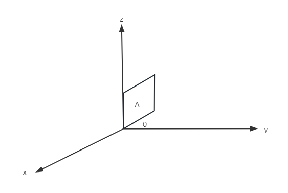
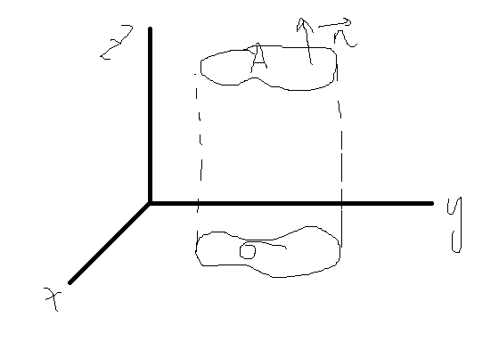
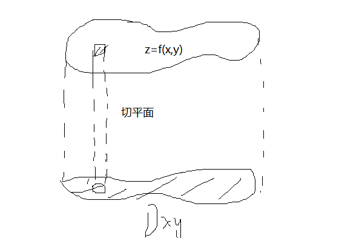
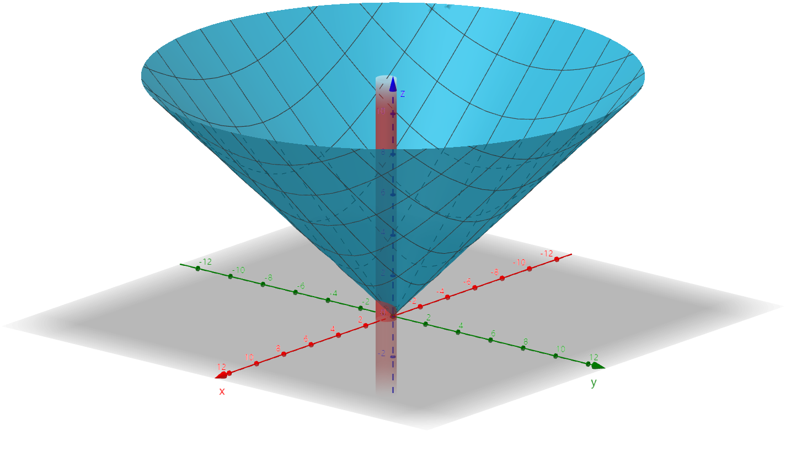
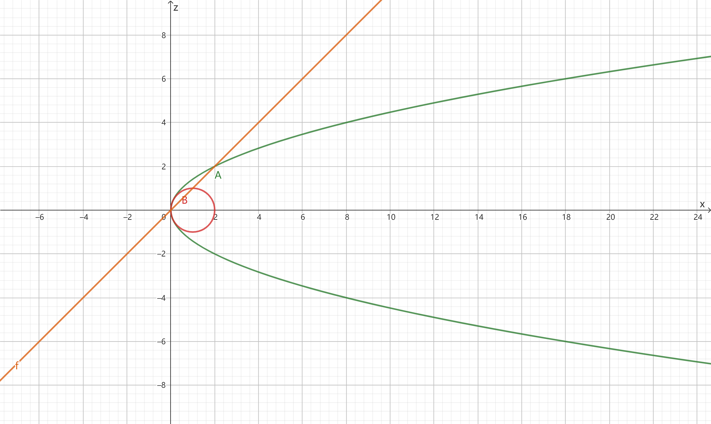
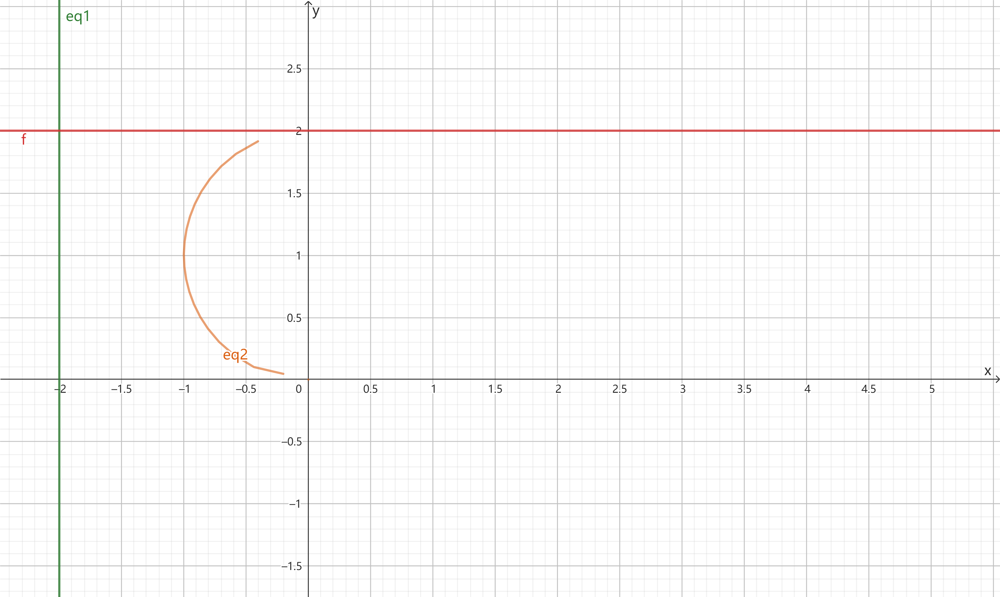

§9.4 重积分的应用
一、曲面的面积

A=cosθσ

A=∣cosr∣σ

ΔAi≈∣cosr∣Δσi（r为 <n,z> 方向夹角余弦）
dA=cosγdθ
ParseError: KaTeX parse error: Got function '\sum' with no arguments as subscript at position 21: …laystyle \iint_\̲s̲u̲m̲ ̲\mathrm dS=\iin…
n=(fx,fy,−1)，∴cosγ=fx2+fy2+1−1
∴ 空间曲面 z=f(x,y)（其投影区域 Dxy）面积公式为 A=∬Dxy1+fx2+fy2dxdy
推广
- x=g(y,z)，A=∬Dyz1+gy2+gz2dydz
- y=h(x,z)，A=∬Dxz1+hx2+hz2dxdz
例题
-
求 z=x2+y2 在 x2+y2=x 内部的面积

解：zx=zx，zy=zy，Dxy:x2+y2≤x
A=∬Dxy2dxdy=2∬Dxydxdy=42π
-
求 z=x2+y2 被 z2=2x 所截部分的面积

解：Dxy:{z=x2+y2z2=2x⇒（消z）{x2+y2=2xz=0
A=∬Dxy2dxdy=2π
二、质心公式
- 平面薄片 μ(x,y) 的质心 xˉ=μ∬Dxμ(x,y)dσ，yˉ=μ∬Dyμ(x,y)dσ
- 若 μ(x,y)=C（常数），则 xˉ=σ∬Dxdσ，yˉ=σ∬Dydσ【形心公式】
- 空间物体 μ(x,y,z) 的质心 xˉ=μ∭Ωxμ(x,y,z)dσ，yˉ=μ∭Ωyμ(x,y,z)dσ，zˉ=μ∭Ωzμ(x,y,z)dσ
- 若 μ(x,y,z)=C（常数），则 xˉ=V∭ΩxdV，yˉ=V∭ΩydV，zˉ=V∭ΩzdV【形心公式】
- 比如，圆 (x−a)2+(y−b)2=R2 的形心为 (a,b)，矩形 a≤x≤b、c≤y≤d 的形心为 (2a+b,2c+d)
- 结论：平面图形的形心落在对称轴上（若存在），空间几何体的形心落在对称面上（若存在）
形心公式的应用
- xˉ 与 σ/V 容易计算
xˉ=σ∬Dxdσ⇒∬Dxdσ=σxˉ∭ΩxdV=xˉV
例题
-
Ω 关于 xOy 面对称，zˉ=0；Ω 关于 y=2 对称，yˉ=2
-
Ω:z=a2−x2−y2 和 z=0 所围闭区域，求 Ω 的形心
解：Ω 关于 xOy 和 yOz 面对称，(xˉ,yˉ,zˉ) 在 z 轴上，xˉ=0，yˉ=0，z2=a2−x2−y2
zˉ=σ∭Ωzdσ=32πa3∫0azπ(a2−z2)dz=32πa341πa4=83a
∴ 所求为 (0,0,83a)
-
求 I=∬D(5x+3y)dσ，D:x2+y2+2x−4y≤4
解：(x+1)2+(y−2)2≤9，xˉ=−1，yˉ=2
σ=9π
I=5∬Dxdσ+3∬Dydσ=5xˉ⋅σ+3yˉ⋅σ=9π
-
求 I=∬Dydxdy，D:x=−2,y=2,x=−2y−y2 所围区域

解：I=yˉ⋅σ=1⋅(2×2−21π×12)=4−2π
-
求 I=∭Ω(x+y+z)dV，Ω:0≤x≤1,0≤y≤1,0≤z≤1 所围体积
解：I=xˉV+yˉV+zˉV=(21+21+21)×1=23